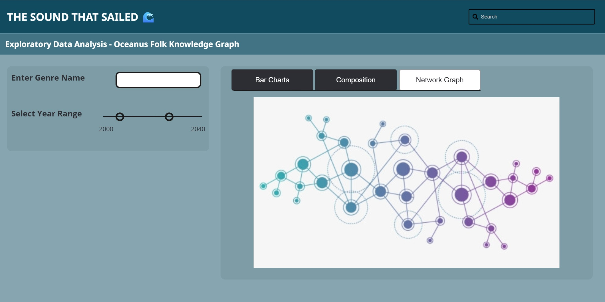
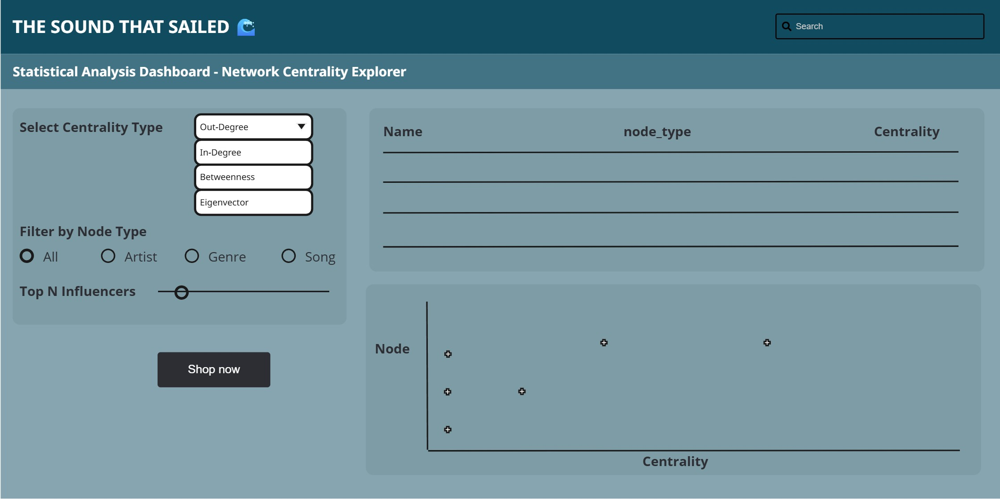
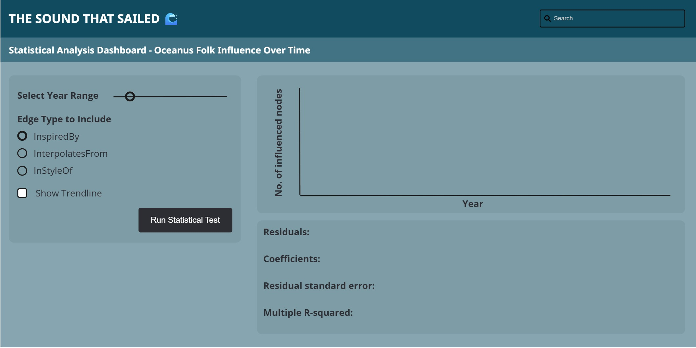
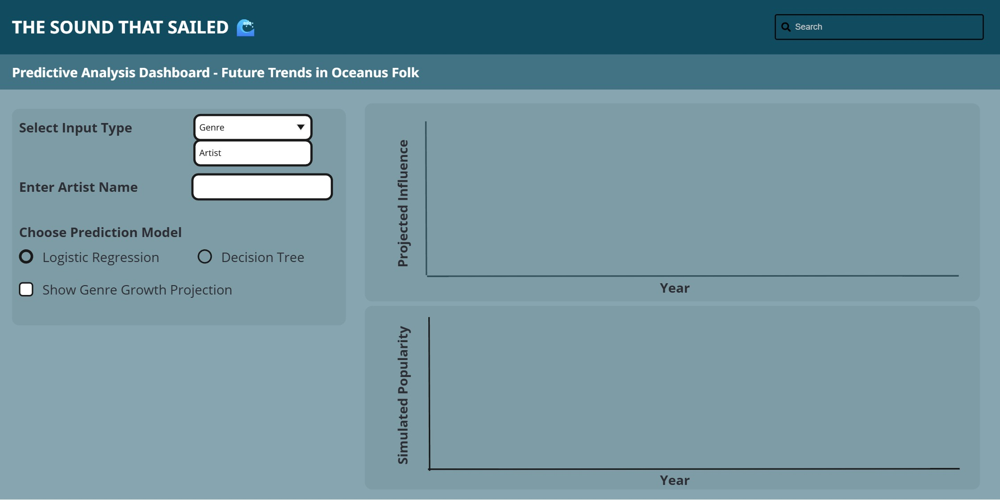

Note: Please toggle between ‘Show’ and ‘Hide’ above based on your preference for viewing the R codes.
3.1 Introduction
Our Shiny prototype application explores the musical impact and future trajectory of Oceanus Folk, a genre popularized by global artist Sailor Shift. Using a knowledge graph composed of interconnected artists, songs, genres, and influences, the dashboard aims to uncover the genre’s growth, spread, and influence over time.
The application is organized into three interactive modules:
Exploratory Data Analysis (EDA): Enables users to examine the composition and evolution of the Oceanus Folk ecosystem through bar charts, pie charts, and an interactive visNetwork graph.
Statistical Analysis: Presents confirmatory insights about the influence of Oceanus Folk, showing how genres and artists have evolved alongside statistical trends and test results.
Predictive Analysis: Forecasts the future of emerging artists and genres using basic models such as logistic regression and decision trees, along with an artist trajectory simulator.
The primary goal of this dashboard is to provide users with an intuitive interface for navigating a complex knowledge graph and draw meaningful conclusions from it.
3.2 Packages
The Shiny application leverages the following R packages:
shiny – Framework to build interactive web applications.
shinyWidgets – Enhanced input widgets like sliders, selectors, and toggles.
tidyverse – Collection of packages for data manipulation and visualization (dplyr, ggplot2, readr, etc.).
visNetwork – Interactive visualization of network graphs using JavaScript under the hood.
igraph – Provides centrality metrics and graph algorithms for network data.
tidygraph – Tidy API for graph manipulation compatible with dplyr verbs.
ggraph – Grammar of graphics for networks (used in earlier static visualizations).
ggplot2 – Core plotting engine for bar charts, line plots, and statistical visualizations.
lubridate – Simplifies working with dates and times.
broom – Tidies statistical model output for interpretation and display.
3.3 Storyboard
3.3.1 Exploratory Data Analysis (EDA)
Purpose
To provide an interactive overview of the Oceanus Folk ecosystem, including its core components - artists, genres, songs, and how they are interconnected over time.
Key Features
Bar Chart: Number of Oceanus Folk songs released per year.
Stacked Bar Chart: Distribution of genres over time to track diversity and changes in music style.
Interactive visNetwork Graph: Explore the influence network visually with tooltips and filtering options by genre and year.
Sidebar Controls: Allow users to filter by selected genres and adjust year ranges to refine the visualizations.
UI Screen
This module helps users intuitively explore the growth and composition of Oceanus Folk, discover artist or genre clusters, and understand the structural spread of influence through the music network.

Code
Code
ui <-fluidPage(titlePanel("Exploratory Data Analysis: Oceanus Folk Knowledge Graph"),sidebarLayout(sidebarPanel(selectInput("genre_select", "Select Genre:",choices =NULL, multiple =TRUE),sliderInput("year_range", "Select Year Range:",min =2000, max =2040, value =c(2020, 2040), sep ="") ),mainPanel(tabsetPanel(tabPanel("Bar Charts",plotOutput("songs_by_year"),plotOutput("genres_over_time") ),tabPanel("Composition",plotOutput("node_composition") ),tabPanel("Network Graph",visNetworkOutput("network_graph", height ="600px") ) ) ) ))server <-function(input, output, session) {# Dynamic filtering based on genre and year filtered_nodes <-reactive({req(nodes) nodes %>%filter(is.na(genre) | genre %in% input$genre_selector) %>%filter(is.na(release_date) |between(as.numeric(release_date), input$year_range[1], input$year_range[2])) }) filtered_edges <-reactive({req(edges) edges %>%filter(source %in%filtered_nodes()$id & target %in%filtered_nodes()$id) })# Oceanus Folk Songs by Year output$song_release_plot <-renderPlot({ oceanus_songs <- nodes %>%filter(genre =="Oceanus Folk", !is.na(release_date)) %>%mutate(year =as.integer(release_date)) %>%count(year)ggplot(oceanus_songs, aes(x = year, y = n)) +geom_col(fill ="#1f78b4") +labs(title ="Oceanus Folk Songs Released by Year", x ="Year", y ="Number of Songs") +theme_minimal() })# Genre Distribution Over Time output$genre_dist_plot <-renderPlot({ genre_dist <- nodes %>%filter(!is.na(genre), !is.na(release_date)) %>%mutate(year =as.integer(release_date)) %>%count(year, genre)ggplot(genre_dist, aes(x = year, y = n, fill = genre)) +geom_col() +labs(title ="Genre Distribution Over Time", x ="Year", y ="Count") +theme_minimal() })# Node Type Composition Pie Chart output$node_type_pie <-renderPlot({ node_type_count <- nodes %>%count(node_type)ggplot(node_type_count, aes(x ="", y = n, fill = node_type)) +geom_col(width =1) +coord_polar(theta ="y") +theme_void() +labs(title ="Node Type Composition") })# Interactive visNetwork Graph output$eda_network <-renderVisNetwork({req(filtered_nodes(), filtered_edges())visNetwork(filtered_nodes(), filtered_edges()) %>%visNodes(shape ="dot", size =10) %>%visEdges(arrows ="to") %>%visOptions(highlightNearest =TRUE, nodesIdSelection =TRUE) %>%visLayout(randomSeed =42) })}
3.3.2 Statistical Analysis
Purpose
To provide confirmatory insights into the evolution of Oceanus Folk’s influence across the music industry using statistical modeling and centrality metrics.
3.3.2.1 Network Centrality Explorer
The goal is to identify key influencers, whether artists, genres, or songs, within the network.
Key Features
Centrality Type Selector: Out-degree, In-degree, Betweenness, Eigenvector.
Node Type Filter: Focus on Artists, Songs, Genres, or view all.
Top-N Slider: Choose how many top influencers to display (e.g., Top 10).
Interactive Table: Displays node metadata with centrality scores.
Dot Plot: Visualizes rankings with hoverable data points.
Node Summary Panel: View expanded information about selected nodes (e.g., Sailor Shift or Oceanus Folk genre hubs).
UI Screen

Code
Code
# Sample placeholder graph (replace with your real tbl_graph)sample_graph <-play_gnp(n =30, p =0.1, directed =TRUE) %>%as_tbl_graph() %>%mutate(name =paste("Node", 1:n()),node_type =sample(c("Artist", "Song", "Genre"), n(), replace =TRUE))ui <-fluidPage(titlePanel("🎵 Network Centrality Explorer"),sidebarLayout(sidebarPanel(selectInput("centrality_type", "Select Centrality Type:",choices =c("Out-degree", "In-degree", "Betweenness", "Eigenvector")),radioButtons("node_filter", "Filter by Node Type:",choices =c("All", "Artist", "Song", "Genre"), inline =TRUE),sliderInput("top_n", "Top N Influencers:", min =5, max =30, value =10) ),mainPanel(DTOutput("centrality_table"),plotOutput("centrality_plot", click ="plot_click"),uiOutput("node_summary") ) ))server <-function(input, output, session) { reactive_graph <-reactive({ g <- sample_graph# Calculate centrality based on user inputV(g)$centrality <-switch(input$centrality_type,"Out-degree"=degree(g, mode ="out"),"In-degree"=degree(g, mode ="in"),"Betweenness"=betweenness(g),"Eigenvector"=evcent(g)$vector ) g }) filtered_data <-reactive({ g <-reactive_graph() g_tbl <-as_tibble(g) g_tbl <- g_tbl %>%mutate(centrality =V(g)$centrality)if (input$node_filter !="All") { g_tbl <- g_tbl %>%filter(node_type == input$node_filter) } g_tbl %>%arrange(desc(centrality)) %>%slice_head(n = input$top_n) }) output$centrality_table <-renderDT({datatable(filtered_data(), options =list(pageLength =5)) }) output$centrality_plot <-renderPlot({ggplot(filtered_data(), aes(x =reorder(name, centrality), y = centrality)) +geom_point(shape =4, size =4, color ="blue") +coord_flip() +labs(title =paste("Top", input$top_n, input$node_filter, "by", input$centrality_type),x ="", y ="Centrality Score") +theme_minimal() }) output$node_summary <-renderUI({ click <- input$plot_clickif (is.null(click)) return(NULL) nearest <-nearPoints(filtered_data(), click, xvar ="name", yvar ="centrality", threshold =20, maxpoints =1)if (nrow(nearest) ==0) return(NULL)wellPanel(h4("Node Summary"),p(strong("Name: "), nearest$name),p(strong("Node Type: "), nearest$node_type),p(strong("Centrality Score: "), round(nearest$centrality, 3)) ) })}shinyApp(ui, server)
3.3.2.2 Influence Over Time
The goal is to examine how the influence of Oceanus Folk has evolved across years using statistical trends and hypothesis testing.
Key Features
Year Range Slider: Set temporal scope from 2000–2040.
Edge Type Selector: Choose which influence types to include (e.g., InspiredBy, InterpolatesFrom).
Time Series Plot: Displays yearly counts of influenced nodes (songs/artists).
Trendline Toggle: Adds a fitted linear model to observe growth patterns.
Statistical Output Panel: Presents the result of a linear regression (and potentially other tests like Mann-Kendall) to verify significant trends.
UI Screen

Code
Code
ui <-fluidPage(titlePanel("Oceanus Folk Influence Over Time"),sidebarLayout(sidebarPanel(sliderInput("year_range", "Select Year Range:",min =2000, max =2040,value =c(2000, 2040), step =1,sep =""),checkboxGroupInput("edge_types", "Edge Types to Include:",choices =c("InspiredBy", "InterpolatesFrom", "InStyleOf"),selected =c("InspiredBy", "InterpolatesFrom")),checkboxInput("show_trend", "Show Trendline", value =TRUE),actionButton("run_test", "Run Statistical Test") ),mainPanel(plotOutput("influence_plot", click ="plot_click"),verbatimTextOutput("stat_test_result") ) ))server <-function(input, output, session) {# Reactive expression for filtered data (placeholder) filtered_data <-reactive({tibble(year =2000:2040,count =sample(10:100, 41, replace =TRUE) ) %>%filter(year >= input$year_range[1], year <= input$year_range[2]) }) output$influence_plot <-renderPlot({ data <-filtered_data() p <-ggplot(data, aes(x = year, y = count)) +geom_line(color ="#2C3E50") +geom_point(color ="#18BC9C") +labs(title ="Influence of Oceanus Folk Over Time",x ="Year",y ="Number of Influenced Nodes") +theme_minimal()if (input$show_trend) { p <- p +geom_smooth(method ="lm", se =FALSE, linetype ="dashed", color ="#E74C3C") } p }) output$stat_test_result <-renderPrint({ input$run_test # trigger test on button pressisolate({ data <-filtered_data() model <-lm(count ~ year, data = data)summary(model) }) })}shinyApp(ui, server)
3.3.3 Predictive Analysis
Purpose
To simulate future outcomes for lesser-known artists or genres based on historical influence patterns using simplified predictive models.
Key Features
User Input: Choose whether to analyze by Artist or Genre.
Dynamic Field: Enter the name of the artist or genre to simulate.
Model Selection: Toggle between Logistic Regression and Decision Tree for prediction.
Genre Projection Plot: Visualizes expected influence growth over time.
Model Result Panel: Displays prediction outcome based on input and selected model.
Artist Trajectory Simulator: Simulates a future popularity trajectory (e.g., 2025–2040) based on influence links, genre, and collaborations.
UI Screen

Code
Code
ui <-fluidPage(titlePanel("Predictive Analysis: Future Trends in Oceanus Folk"),sidebarLayout(sidebarPanel(selectInput("input_type", "Select Input Type:",choices =c("Artist", "Genre")),uiOutput("dynamic_input"),radioButtons("model_type", "Choose Prediction Model:",choices =c("Logistic Regression", "Decision Tree"),selected ="Logistic Regression"),checkboxInput("show_projection", "Show Genre Growth Projection", value =TRUE) ),mainPanel(conditionalPanel(condition ="input.show_projection == true",plotOutput("genre_projection") ),verbatimTextOutput("model_results"),h4("Simulated Artist Trajectory"),plotOutput("artist_trajectory") ) ))server <-function(input, output, session) {# Dynamically update input field output$dynamic_input <-renderUI({if (input$input_type =="Artist") {textInput("user_input", "Enter Artist Name:", value ="") } else {textInput("user_input", "Enter Genre Name:", value ="") } })# Placeholder projection plot output$genre_projection <-renderPlot({ years <-2025:2040 growth <-cumsum(runif(length(years), min =0, max =10))plot(years, growth, type ="l", col ="steelblue", lwd =2,xlab ="Year", ylab ="Projected Influence",main ="Projected Genre Influence Over Time") })# Placeholder model results output$model_results <-renderPrint({paste("Model Type:", input$model_type,"\nInput:", input$user_input,"\nPrediction: Likely to rise in popularity") })# Placeholder artist trajectory simulation output$artist_trajectory <-renderPlot({ timeline <-2025:2040 popularity <-cumsum(runif(length(timeline), min =0, max =5))plot(timeline, popularity, type ="o", col ="darkgreen",xlab ="Year", ylab ="Simulated Popularity",main =paste("Trajectory for", input$user_input)) })}
3.4 Conclusion
This Shiny application offers a comprehensive analytical environment to explore, understand, and forecast the evolution of Oceanus Folk within the music industry. Through these modules, the dashboard bridges intuitive visual exploration with robust statistical reasoning and forward-looking simulation. By enabling users to dissect historical patterns, identify key influencers, and simulate future trajectories, this application serves as a powerful decision-support and storytelling tool.
Source Code
---title: "Take Home Exercise 3"subtitle: "Storyboard"format: htmldate: 06/10/2025date-format: longdate-modified: last-modifiededitor: visualexecute: eval: false echo: true warning: false freeze: true---[*Note: Please toggle between 'Show' and 'Hide' above based on your preference for viewing the R codes.*]{.underline}# 3.1 IntroductionOur Shiny prototype application explores the musical impact and future trajectory of Oceanus Folk, a genre popularized by global artist Sailor Shift. Using a knowledge graph composed of interconnected artists, songs, genres, and influences, the dashboard aims to uncover the genre’s growth, spread, and influence over time.The application is organized into three interactive modules:1. **Exploratory Data Analysis (EDA):** Enables users to examine the composition and evolution of the Oceanus Folk ecosystem through bar charts, pie charts, and an interactive visNetwork graph.2. **Statistical Analysis:** Presents confirmatory insights about the influence of Oceanus Folk, showing how genres and artists have evolved alongside statistical trends and test results.3. **Predictive Analysis:** Forecasts the future of emerging artists and genres using basic models such as logistic regression and decision trees, along with an artist trajectory simulator.The primary goal of this dashboard is to provide users with an intuitive interface for navigating a complex knowledge graph and draw meaningful conclusions from it.# 3.2 PackagesThe Shiny application leverages the following R packages:- **`shiny`** – Framework to build interactive web applications.- **`shinyWidgets`** – Enhanced input widgets like sliders, selectors, and toggles.- **`tidyverse`** – Collection of packages for data manipulation and visualization (`dplyr`, `ggplot2`, `readr`, etc.).- **`visNetwork`** – Interactive visualization of network graphs using JavaScript under the hood.- **`igraph`** – Provides centrality metrics and graph algorithms for network data.- **`tidygraph`** – Tidy API for graph manipulation compatible with `dplyr` verbs.- **`ggraph`** – Grammar of graphics for networks (used in earlier static visualizations).- **`ggplot2`** – Core plotting engine for bar charts, line plots, and statistical visualizations.- **`lubridate`** – Simplifies working with dates and times.- **`broom`** – Tidies statistical model output for interpretation and display.# 3.3 Storyboard## 3.3.1 Exploratory Data Analysis (EDA)### PurposeTo provide an interactive overview of the Oceanus Folk ecosystem, including its core components - artists, genres, songs, and how they are interconnected over time.### Key Features- **Bar Chart**: Number of Oceanus Folk songs released per year.- **Stacked Bar Chart**: Distribution of genres over time to track diversity and changes in music style.- **Interactive visNetwork Graph**: Explore the influence network visually with tooltips and filtering options by genre and year.- **Sidebar Controls**: Allow users to filter by selected genres and adjust year ranges to refine the visualizations.### UI ScreenThis module helps users intuitively explore the growth and composition of Oceanus Folk, discover artist or genre clusters, and understand the structural spread of influence through the music network.### Code```{r}ui <-fluidPage(titlePanel("Exploratory Data Analysis: Oceanus Folk Knowledge Graph"),sidebarLayout(sidebarPanel(selectInput("genre_select", "Select Genre:",choices =NULL, multiple =TRUE),sliderInput("year_range", "Select Year Range:",min =2000, max =2040, value =c(2020, 2040), sep ="") ),mainPanel(tabsetPanel(tabPanel("Bar Charts",plotOutput("songs_by_year"),plotOutput("genres_over_time") ),tabPanel("Composition",plotOutput("node_composition") ),tabPanel("Network Graph",visNetworkOutput("network_graph", height ="600px") ) ) ) ))server <-function(input, output, session) {# Dynamic filtering based on genre and year filtered_nodes <-reactive({req(nodes) nodes %>%filter(is.na(genre) | genre %in% input$genre_selector) %>%filter(is.na(release_date) |between(as.numeric(release_date), input$year_range[1], input$year_range[2])) }) filtered_edges <-reactive({req(edges) edges %>%filter(source %in%filtered_nodes()$id & target %in%filtered_nodes()$id) })# Oceanus Folk Songs by Year output$song_release_plot <-renderPlot({ oceanus_songs <- nodes %>%filter(genre =="Oceanus Folk", !is.na(release_date)) %>%mutate(year =as.integer(release_date)) %>%count(year)ggplot(oceanus_songs, aes(x = year, y = n)) +geom_col(fill ="#1f78b4") +labs(title ="Oceanus Folk Songs Released by Year", x ="Year", y ="Number of Songs") +theme_minimal() })# Genre Distribution Over Time output$genre_dist_plot <-renderPlot({ genre_dist <- nodes %>%filter(!is.na(genre), !is.na(release_date)) %>%mutate(year =as.integer(release_date)) %>%count(year, genre)ggplot(genre_dist, aes(x = year, y = n, fill = genre)) +geom_col() +labs(title ="Genre Distribution Over Time", x ="Year", y ="Count") +theme_minimal() })# Node Type Composition Pie Chart output$node_type_pie <-renderPlot({ node_type_count <- nodes %>%count(node_type)ggplot(node_type_count, aes(x ="", y = n, fill = node_type)) +geom_col(width =1) +coord_polar(theta ="y") +theme_void() +labs(title ="Node Type Composition") })# Interactive visNetwork Graph output$eda_network <-renderVisNetwork({req(filtered_nodes(), filtered_edges())visNetwork(filtered_nodes(), filtered_edges()) %>%visNodes(shape ="dot", size =10) %>%visEdges(arrows ="to") %>%visOptions(highlightNearest =TRUE, nodesIdSelection =TRUE) %>%visLayout(randomSeed =42) })}```## 3.3.2 Statistical Analysis### PurposeTo provide confirmatory insights into the evolution of Oceanus Folk’s influence across the music industry using statistical modeling and centrality metrics.### 3.3.2.1 Network Centrality ExplorerThe goal is to identify key influencers, whether artists, genres, or songs, within the network.#### Key Features- **Centrality Type Selector**: Out-degree, In-degree, Betweenness, Eigenvector.- **Node Type Filter**: Focus on Artists, Songs, Genres, or view all.- **Top-N Slider**: Choose how many top influencers to display (e.g., Top 10).- **Interactive Table**: Displays node metadata with centrality scores.- **Dot Plot**: Visualizes rankings with hoverable data points.- **Node Summary Panel**: View expanded information about selected nodes (e.g., *Sailor Shift* or Oceanus Folk genre hubs).#### UI Screen#### Code```{r}# Sample placeholder graph (replace with your real tbl_graph)sample_graph <-play_gnp(n =30, p =0.1, directed =TRUE) %>%as_tbl_graph() %>%mutate(name =paste("Node", 1:n()),node_type =sample(c("Artist", "Song", "Genre"), n(), replace =TRUE))ui <-fluidPage(titlePanel("🎵 Network Centrality Explorer"),sidebarLayout(sidebarPanel(selectInput("centrality_type", "Select Centrality Type:",choices =c("Out-degree", "In-degree", "Betweenness", "Eigenvector")),radioButtons("node_filter", "Filter by Node Type:",choices =c("All", "Artist", "Song", "Genre"), inline =TRUE),sliderInput("top_n", "Top N Influencers:", min =5, max =30, value =10) ),mainPanel(DTOutput("centrality_table"),plotOutput("centrality_plot", click ="plot_click"),uiOutput("node_summary") ) ))server <-function(input, output, session) { reactive_graph <-reactive({ g <- sample_graph# Calculate centrality based on user inputV(g)$centrality <-switch(input$centrality_type,"Out-degree"=degree(g, mode ="out"),"In-degree"=degree(g, mode ="in"),"Betweenness"=betweenness(g),"Eigenvector"=evcent(g)$vector ) g }) filtered_data <-reactive({ g <-reactive_graph() g_tbl <-as_tibble(g) g_tbl <- g_tbl %>%mutate(centrality =V(g)$centrality)if (input$node_filter !="All") { g_tbl <- g_tbl %>%filter(node_type == input$node_filter) } g_tbl %>%arrange(desc(centrality)) %>%slice_head(n = input$top_n) }) output$centrality_table <-renderDT({datatable(filtered_data(), options =list(pageLength =5)) }) output$centrality_plot <-renderPlot({ggplot(filtered_data(), aes(x =reorder(name, centrality), y = centrality)) +geom_point(shape =4, size =4, color ="blue") +coord_flip() +labs(title =paste("Top", input$top_n, input$node_filter, "by", input$centrality_type),x ="", y ="Centrality Score") +theme_minimal() }) output$node_summary <-renderUI({ click <- input$plot_clickif (is.null(click)) return(NULL) nearest <-nearPoints(filtered_data(), click, xvar ="name", yvar ="centrality", threshold =20, maxpoints =1)if (nrow(nearest) ==0) return(NULL)wellPanel(h4("Node Summary"),p(strong("Name: "), nearest$name),p(strong("Node Type: "), nearest$node_type),p(strong("Centrality Score: "), round(nearest$centrality, 3)) ) })}shinyApp(ui, server)```### 3.3.2.2 Influence Over TimeThe goal is to examine how the influence of Oceanus Folk has evolved across years using statistical trends and hypothesis testing.#### Key Features- **Year Range Slider**: Set temporal scope from 2000–2040.- **Edge Type Selector**: Choose which influence types to include (e.g., *InspiredBy*, *InterpolatesFrom*).- **Time Series Plot**: Displays yearly counts of influenced nodes (songs/artists).- **Trendline Toggle**: Adds a fitted linear model to observe growth patterns.- **Statistical Output Panel**: Presents the result of a linear regression (and potentially other tests like Mann-Kendall) to verify significant trends.#### UI Screen#### Code```{r}ui <-fluidPage(titlePanel("Oceanus Folk Influence Over Time"),sidebarLayout(sidebarPanel(sliderInput("year_range", "Select Year Range:",min =2000, max =2040,value =c(2000, 2040), step =1,sep =""),checkboxGroupInput("edge_types", "Edge Types to Include:",choices =c("InspiredBy", "InterpolatesFrom", "InStyleOf"),selected =c("InspiredBy", "InterpolatesFrom")),checkboxInput("show_trend", "Show Trendline", value =TRUE),actionButton("run_test", "Run Statistical Test") ),mainPanel(plotOutput("influence_plot", click ="plot_click"),verbatimTextOutput("stat_test_result") ) ))server <-function(input, output, session) {# Reactive expression for filtered data (placeholder) filtered_data <-reactive({tibble(year =2000:2040,count =sample(10:100, 41, replace =TRUE) ) %>%filter(year >= input$year_range[1], year <= input$year_range[2]) }) output$influence_plot <-renderPlot({ data <-filtered_data() p <-ggplot(data, aes(x = year, y = count)) +geom_line(color ="#2C3E50") +geom_point(color ="#18BC9C") +labs(title ="Influence of Oceanus Folk Over Time",x ="Year",y ="Number of Influenced Nodes") +theme_minimal()if (input$show_trend) { p <- p +geom_smooth(method ="lm", se =FALSE, linetype ="dashed", color ="#E74C3C") } p }) output$stat_test_result <-renderPrint({ input$run_test # trigger test on button pressisolate({ data <-filtered_data() model <-lm(count ~ year, data = data)summary(model) }) })}shinyApp(ui, server)```## 3.3.3 Predictive Analysis### PurposeTo simulate future outcomes for lesser-known artists or genres based on historical influence patterns using simplified predictive models.### Key Features- **User Input**: Choose whether to analyze by Artist or Genre.- **Dynamic Field**: Enter the name of the artist or genre to simulate.- **Model Selection**: Toggle between Logistic Regression and Decision Tree for prediction.- **Genre Projection Plot**: Visualizes expected influence growth over time.- **Model Result Panel**: Displays prediction outcome based on input and selected model.- **Artist Trajectory Simulator**: Simulates a future popularity trajectory (e.g., 2025–2040) based on influence links, genre, and collaborations.### UI Screen### Code```{r}ui <-fluidPage(titlePanel("Predictive Analysis: Future Trends in Oceanus Folk"),sidebarLayout(sidebarPanel(selectInput("input_type", "Select Input Type:",choices =c("Artist", "Genre")),uiOutput("dynamic_input"),radioButtons("model_type", "Choose Prediction Model:",choices =c("Logistic Regression", "Decision Tree"),selected ="Logistic Regression"),checkboxInput("show_projection", "Show Genre Growth Projection", value =TRUE) ),mainPanel(conditionalPanel(condition ="input.show_projection == true",plotOutput("genre_projection") ),verbatimTextOutput("model_results"),h4("Simulated Artist Trajectory"),plotOutput("artist_trajectory") ) ))server <-function(input, output, session) {# Dynamically update input field output$dynamic_input <-renderUI({if (input$input_type =="Artist") {textInput("user_input", "Enter Artist Name:", value ="") } else {textInput("user_input", "Enter Genre Name:", value ="") } })# Placeholder projection plot output$genre_projection <-renderPlot({ years <-2025:2040 growth <-cumsum(runif(length(years), min =0, max =10))plot(years, growth, type ="l", col ="steelblue", lwd =2,xlab ="Year", ylab ="Projected Influence",main ="Projected Genre Influence Over Time") })# Placeholder model results output$model_results <-renderPrint({paste("Model Type:", input$model_type,"\nInput:", input$user_input,"\nPrediction: Likely to rise in popularity") })# Placeholder artist trajectory simulation output$artist_trajectory <-renderPlot({ timeline <-2025:2040 popularity <-cumsum(runif(length(timeline), min =0, max =5))plot(timeline, popularity, type ="o", col ="darkgreen",xlab ="Year", ylab ="Simulated Popularity",main =paste("Trajectory for", input$user_input)) })}```# 3.4 ConclusionThis Shiny application offers a comprehensive analytical environment to explore, understand, and forecast the evolution of Oceanus Folk within the music industry. Through these modules, the dashboard bridges intuitive visual exploration with robust statistical reasoning and forward-looking simulation. By enabling users to dissect historical patterns, identify key influencers, and simulate future trajectories, this application serves as a powerful decision-support and storytelling tool.